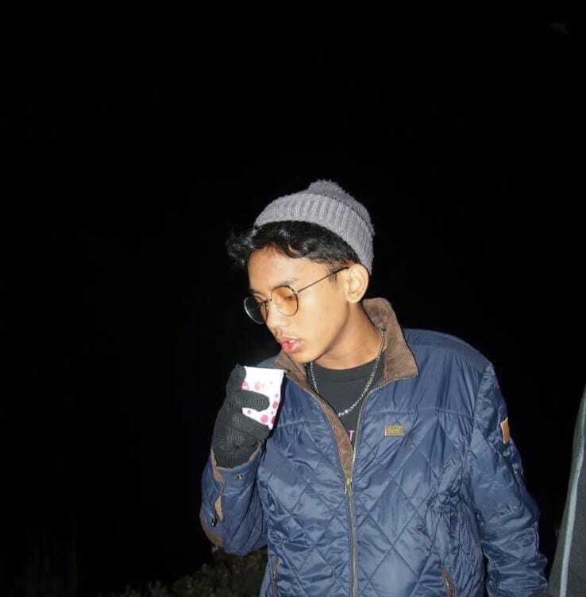

Aditya Rahim Bramantio merupakan seorang pembelajar berdedikasi tinggi yang saat ini menempuh masa studi akademisnya di **Harvard University**. Langkah besarnya ke jenjang institusi global tersebut dibangun di atas landasan pendidikan menengah yang kokoh dari **SMAN 6 Tangerang Selatan**. Perpaduan pengalaman edukasi nasional dan atmosfer internasional membentuk karakteristiknya menjadi pribadi yang berwawasan luas serta adaptif terhadap dinamika global.
Di ranah akademik, Aditya memfokuskan kompetensinya pada aspek **penulisan ilmiah serta penyusunan jurnal**. Ia memiliki ketajaman analitis dalam mengolah data riset, merumuskan metodologi yang terstruktur, dan menyajikannya dalam sebuah narasi ilmiah yang komprehensif. Baginya, jurnal bukan sekadar dokumen tertulis, melainkan sebuah medium esensial untuk menyebarluaskan gagasan yang valid, kritis, serta berdampak bagi perkembangan ilmu pengetahuan.
Sebagai penyeimbang dari ketatnya aktivitas berpikir logis di dunia perkuliahan, Aditya mendedikasikan waktu luangnya sebagai seorang **pembuat karya seni**. Hobi ini ia jadikan sebagai ruang kontemplasi dan katarsis visual, di mana ide-ide abstrak, emosi, dan keindahan estetika dapat dituangkan tanpa batasan formal. Ranah seni ini mencerminkan sinergi yang harmonis di dalam dirinya—menggabungkan kedalaman intelektual seorang akademisi dengan kebebasan berekspresi seorang seniman.